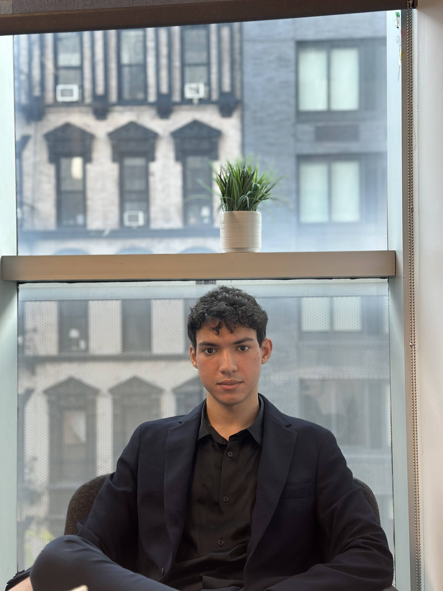

Aymane Saissi
PhD candidate & computational engineer_
Mechanical engineer working at the intersection of hardware, control, and computation — from real-fluid CFD solvers to autonomous robots. Currently pursuing a PhD at the University of Cambridge.

// A.SAISSI · CAMBRIDGEEngineering across cultures & disciplines
I grew up immersed in a blend of French and Moroccan cultures, which shaped my curiosity and adaptability. Speaking French, Arabic, and English fluently taught me to value diverse perspectives — and alongside language I built a strong foundation in engineering, particularly mechanical systems, fluid dynamics, and robotics.
Passion for innovation
I'm drawn to systems that model the physical world and act on it autonomously — from compressible, phase-changing flows in nozzles to robots that optimize their behavior from real-time data. My aim is to push adaptive, intelligent systems toward meaningful impact in both local and global contexts.
From research to industry
I graduated from The Cooper Union with a B.E. in Mechanical Engineering (GPA 3.99/4.0) and a co-authored ASME publication, then spent a year as a Co-op Engineer at Con Edison building Python automation and Power BI analytics for utility operations in New York. I'm now continuing that path as a PhD researcher at Cambridge.
Vision
I want to bridge the gap between technology and society. Whether it's high-fidelity simulation, automating healthcare systems, or building smarter sustainable hardware, I believe engineering can drive real change — from rural villages in Morocco to the streets of New York and the labs of Cambridge.
Education
Skills & expertise
Take a look at my projects to see how these come together on real-world challenges.